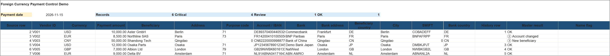
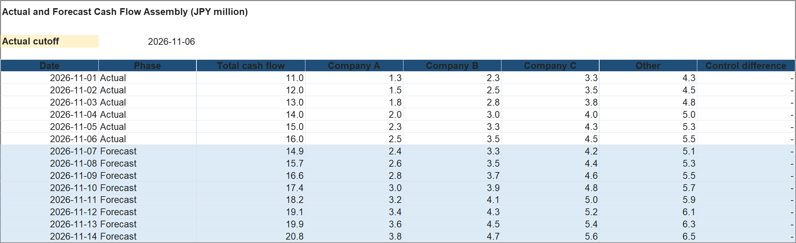
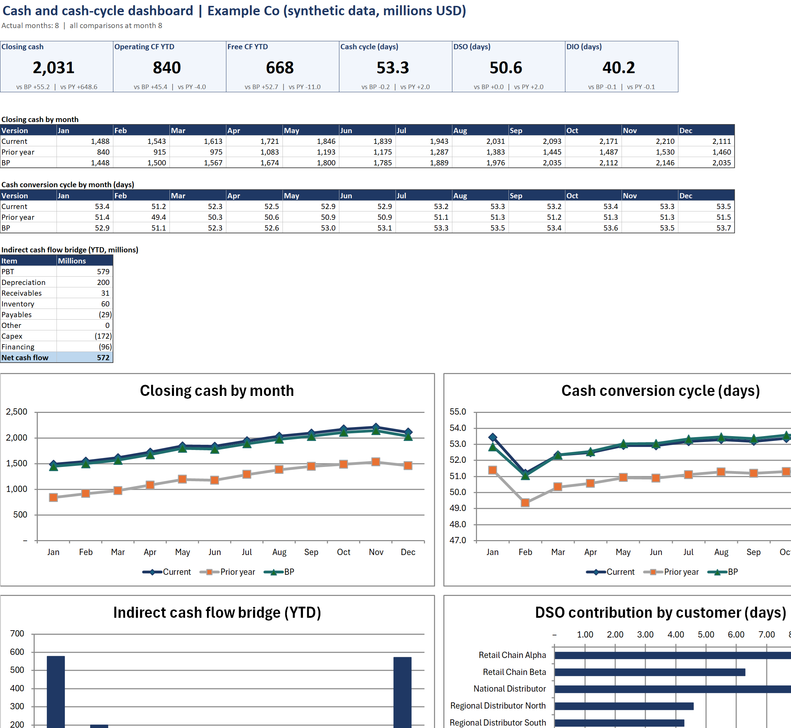
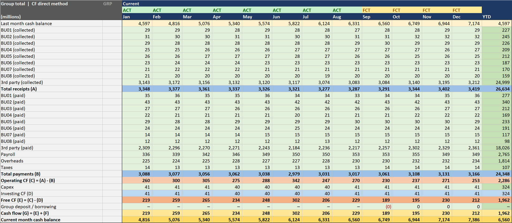

I translate treasury and finance logic into controlled, auditable and maintainable automation.
Hands-on liquidity, cash-flow, FX, payment and control experience across a parent company and six subsidiaries, combined with Oracle ERP Financials (AP, AR, GL), UAT and tested Excel, Power Query and VBA workflows.
Treasury judgement, control design and finance-system delivery applied to recurring operational problems.
Cash & Liquidity Management
Multi-entity and multi-currency cash positions, liquidity forecasts, bank activity and funding controls.
Cash-Flow Forecasting
Actual and forecast logic, controlled account mapping, reconciliation and variance investigation.
FX & Payment Controls
FX exposure and hedging support, pre-payment checks, exception routing and independent confirmation points.
Finance Transformation
Process redesign, control mapping and maintainable Excel, Power Query and VBA automation.
Finance Systems & Analytics
Oracle AP, AR and GL; UAT; portfolio-demonstrated Power BI, DAX and SQL querying and aggregation.
Cross-Border Delivery
Chinese, Japanese and English coordination across Japan, China, Taiwan and Thailand.
Applied AI & AI Integration
Hands-on Claude API and OpenAI API integration across structured-output workflows, multilingual product prototypes, testing, validation and accountable human review.
Featured Projects
Five projects, ordered by relevance to treasury technology and finance transformation.
Two reusable demonstrations built on synthetic data: a foreign-currency pre-payment control and an actual/forecast cash-flow automation framework.
Business problem
Foreign-currency payments are irreversible, and checking each one against several sources by hand is slow and error-prone. Monthly cash-flow, bank and AR/AP updates were repetitive, time-consuming copy-and-paste work.
My role
I translated treasury requirements into control logic, designed the data flow and acceptance tests, and reviewed the implementation. AI-assisted coding supported delivery.
Solution approach
Payment control: one row per payment brings together payment instruction, beneficiary history, IBAN/SWIFT checks, ERP/AP evidence and invoice allocation.
Cash flow: Power Query standardises AP, bank and AR inputs; VBA imports them; a cutoff date switches actuals to forecast.
A Vendor Reference Bridge keeps matching working when long account identifiers are truncated or reformatted.
Control design
Header comparison, row checks and an AR company-code check
Formula-column extension; pivot refresh and date/time stamps where coded
Source File column kept for traceability
A control-difference check between detail and total
Validation and exception handling
Account, SWIFT, IBAN-format, amount and purpose-code exceptions are routed to Critical, Review or OK. Empty queries, changed headers and company-code mismatches stop the run instead of passing silently.
Human-review points
Account changes need independent confirmation. Green means "no contradiction found within the defined rules", not "proven correct". The checks cannot prove that source data is true.
Estimated operational impact
Cash-flow update: from about 5–6 hours per cycle (twice a month) to under 30 minutes
Bank-statement processing: from about 2 hours to about 5 minutes
Foreign-currency payment review: about 8 hours per month saved
Combined recurring impact: approximately 19–21 hours per month (components overlap and are not simply added)
Estimated by the author based on before-and-after task time and operating frequency. Scope and methodology are described in the project documentation.
Synthetic data and confidentiality. Built independently with synthetic entities, amounts, dates and identifiers. The public materials contain no employer data or internal identifiers.

FX payment control demo: row-level evidence and exception flags (synthetic data).

Cash-flow demo: actual/forecast switch at the cutoff date and a control-difference check (synthetic data).
Completed Treasury SQL and Power BI Analytics Extension
Cash flow forecast and FX payment control in SQL and Power BI
The two Excel tools above are extended with a tested SQL data layer and a three-page Power BI report, on fully synthetic data. Their rules were moved into SQL without changing either workbook.
Actual vs Forecast cash flow: twelve months, four entities, five currencies; daily cash position that reconciles to the Excel balance; variance with planted events that the tests detect.
Pre-payment control: 150 payments checked against invoice, ERP schedule and vendor bank history by twenty rules; one primary exception and a red, amber or green risk level per payment; unmatched vendors stay visible.
Tested, not just written: 47 data-quality tests pass on SQL Server and on SQLite with identical results; the payment rules agree with an independent Python implementation and with the original Excel check; 12 of 12 injected faults are caught.
Power BI: star-schema model, 15 DAX measures checked against the SQL numbers, and three report pages: overview, cash-flow analysis, payment control.
Synthetic data and privacy-safe design: no employer data, files, field names or proprietary rules.
Scope. A control demonstration on synthetic data, run on one machine (SQL Server 2022 Express). Passing the defined checks does not prove that a payment is correct, and it is not a fraud model or a treasury system.
Cash Flow & Cash Conversion Cycle Models: single entity and group
Two formula-driven Excel models on synthetic data: one entity with customer-level detail, and a multi-business-unit group built on the same logic. Customers, suppliers, business units and segments are configuration lists, so the structure can grow or shrink without editing formulas.
Business problem
Cash reporting often lives in copy-pasted workbooks: layouts drift, the gap between profit and cash hides in a plug, and DSO moves without anyone knowing which customers caused it.
My role
I defined the cash-flow logic, reconciliations and test cases, then validated the generated models across different configurations.
Single entity
One ledger holds feed and calculation; direct and indirect cash flow, cash conversion cycle, rolling 12-month cycle, variance flags and a dashboard are formulas on it.
Collections and payments are derived per customer and per supplier; AR and AP sheets show balances and customer DSO, and a DSO analysis splits the change into a collection effect and a mix effect per customer.
Group
Identical template per business unit; segment and group sheets add the same cell of their members.
One output block per unit, side by side on the same sheets, with identical formulas; internal flows cancel by construction.
Control design
Eight (single entity) and ten (group) built-in reconciliations, all passing: closing cash against the ledger, the indirect-method balancing row at zero in every month and version, indirect against direct operating cash flow, and group sums against their parts.
Tested configurations
Single entity: 3, 10 and 24 customers, one to twelve actual months. Group: 4, 8 and 11 business units with zero to three segments. Every configuration passed all checks.

Single-entity dashboard (synthetic data).

Group direct cash-flow block: current-year months with actual and forecast flags (synthetic data).
Built independently with synthetic data to demonstrate transferable cash-flow modelling, control and automation capabilities developed through professional treasury experience.
REST API built with FastAPI and Pydantic to apply rule-based pre-payment controls and return PASS, REVIEW or BLOCK decisions for synthetic payment batches. It integrates ECB reference rates through HTTPX and exposes auditable exception findings without authorizing or executing payments. The Dockerized service is covered by 31 automated tests (approximately 99% coverage), validated in GitHub Actions and deployed on Render.
Python
FastAPI
Pydantic
HTTPX
Pytest
Docker
GitHub Actions
Render
Synthetic data only. Rule-based exception identification; does not authorize or execute payments.
An English-language cross-asset research terminal built with Streamlit and Plotly. It is decision support, not an automated trading system, a forecast or investment advice.
What it shows
Index performance and drawdowns
Market breadth
Trend participation against 50- and 200-day averages
Rates (Treasury curve) and a U.S. dollar proxy
Relative rotation graphs (RRG)
Data and controls
Automatic data fetching from external public sources (Yahoo Finance, FRED) with caching. Missing or stale observations stay visible instead of being filled with synthetic values.
The application uses public market-data sources with caching and explicit missing-data handling. Public-source data may be delayed or revised.
PJ 5Project 5 · Applied AI & AI Integration
Applied AI Delivery: Claude API and OpenAI API
Two hands-on API integrations demonstrating structured model outputs, bounded automation and accountable human review across both finance-adjacent and non-finance workflows.
Claude API media workflow
Integrated the Claude API through Python into a local media workflow. Remote model calls returned structured JSON for scene segmentation and image/B-roll keyword selection, followed by local processing and storage.
Multilingual B2B inquiry and RFQ prototype
Built and deployed an English, Japanese and Chinese prototype with OpenAI API-assisted inquiry intake, specification completeness and conflict checks, bounded clarification questions, usage controls and human-review escalation.
My responsibility
Defined the requirements, workflow and acceptance criteria; tested and validated outputs; debugged integration and data issues; set human-review boundaries; and made the final product decisions. AI tools accelerated implementation but did not replace acceptance responsibility.
Scope boundary
These are personal applied-AI and API-integration projects, not employer production systems. They demonstrate AI-enabled product delivery and integration rather than model training, ML engineering or multi-year senior backend experience.
Selected Impact
Treasury Technology & Finance Transformation Portfolio. All figures are author estimates.
5–6 h → <30 min
Cash-flow update, per cycle (twice a month)
Estimated
~2 h → ~5 min
Bank-statement processing
Estimated
~8 h / month
Foreign-currency payment review
Estimated
~19–21 h / month
Combined recurring impact (components overlap)
Estimated
Estimated by the author based on before-and-after task time and operating frequency. Scope and methodology are described in the project documentation.
How I Work
I start with the treasury problem, make the control logic explicit, then validate the automated result against defined acceptance criteria.
Define the business problem Start from the operational pain point and who relies on the result.
Translate rules into requirements Turn how the work is actually done into explicit, testable rules.
Design the control and data flow Define what stops the process, what is flagged and what a person must confirm.
Implement and review Use appropriate tools, including AI-assisted coding where useful, then review the logic and output.
Test calculations and edge cases Test changed headers, empty inputs, long identifiers, shorter periods and reconciliation breaks.
Validate the delivered result Accept the output against expected results and document the limits.
About
Background
Master of Economics, Kobe University
Treasury and finance-transformation experience across a parent company and six subsidiaries
Oracle ERP Financials: AP, AR and GL; requirements, testing and UAT
Working across borders
Coordination across Japan, China, Taiwan and Thailand
Mandarin Chinese; Japanese (JLPT N1); English business correspondence
Chinese–Japanese business translation
Contact
Open to Corporate Treasury, Cash and Liquidity Management, Treasury Technology, Finance Systems and Finance Transformation roles.